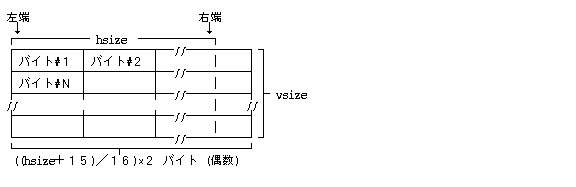
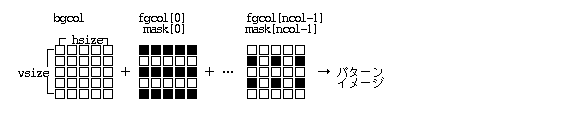
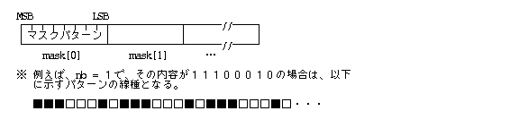
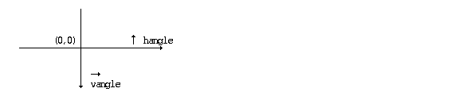
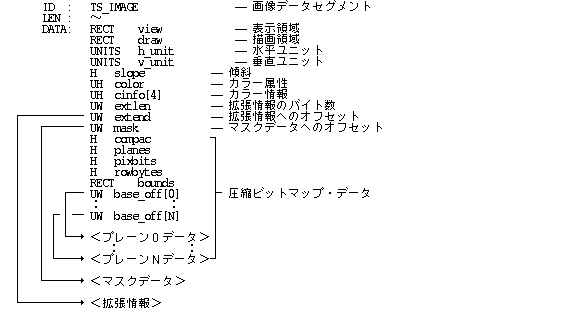
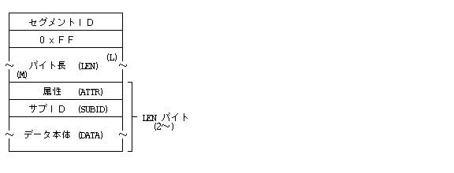

3.6.3 Визначення графічних об'єктів (Figure Definition Segment TS_FDEF)
Загальний огляд
, Мал. визначення .
, та , ID та . Тип (Type) ID , та .
Тип (Type) , та ID , ID визначення та та також існує.
ID , Мал. є, Мал. , Мал. також та . , Мал. , .
() Мал. ID існує , Мал. , Мал. ID та .
:
Мал. . , Табл. , та .
LEN : 〜
SUBID: 0
ATTR : UB − --
DATA : UH nent --
COLOR col[nent] -- (nent )
- nent:
- .
- col[]:
- Табл. .
Визначення маски контуру / лінії (Line Pattern Definition / SUBID 1):
Визначає користувацькі візерунки та маски для стилю ліній.
LEN : Змінна
SUBID: 1
ATTR : UB type -- Тип візерунка (Type)
DATA : UH id -- ID візерунка (Pattern ID)
<Якщо type = 0>:
UH hsize -- Горизонтальний розмір (Size)
UH vsize -- Вертикальний розмір (Size)
UB mask[] -- Матриця 1-бітової маски
- type:
- Тип маски:
0: 1-бітова растрова маска
1〜: Зарезервовано - id:
- ID візерунка (від 0 і вище). Системні візерунки 1–13 визначені за замовчуванням:
1 : 0 % (прозорий) 2 : 12.5 % 3 : 25 % 4 : 50 % 5 : 75 % 6 : 87.5 % 7 : 100 % (суцільний) 8 : Горизонтальні смуги 9 : Вертикальні смуги 10: Діагональні смуги (вправо) 11: Діагональні смуги (вліво) 12: Клітка / сітка 13: Точкова сітка - hsize, vsize:
- Ширина та висота растрової матриці візерунка.
- mask:
- Масив маски розміром hsize × vsize бітів. Біт "1" малює лінію, біт "0" залишає прозорою.

Визначення кольорових візерунків заповнення (Fill Pattern Definition / SUBID 2):
Визначає кольорові маски та візерунки для заповнення областей фігур.
LEN : Змінна
SUBID: 2
ATTR : UB type -- Тип візерунка (Type)
DATA : UH id -- ID візерунка (Pattern ID)
<Якщо type = 0>:
UH hsize -- Горизонтальний розмір
UH vsize -- Вертикальний розмір
UH ncol -- Кількість кольорів (ncol)
COLOR fgcol[ncol] -- Кольори переднього плану (ncol кольорів)
COLOR bgcol -- Колір фону
UH mask[ncol] -- ID масок (ncol масок)
- type:
- Тип кольорового візерунка:
0: Багатоколірна растрова матриця
1〜: Зарезервовано - id:
- ID кольорового візерунка заповнення (від 1 і вище). При id = 0 перевизначається системне заповнення за замовчуванням.
- hsize, vsize:
- Ширина та висота матриці заповнення.
- ncol:
- Кількість використовуваних кольорів у візерунку (ncol > 0).
- fgcol[], bgcol:
- Масив кольорів переднього плану та колір фону. fgcol, bgcol＜0 випадок , .
- mask:
- ID існує. 0 та .
bgcol , hsize×vsize ,
mask[i] "1"
,
fgcol[i] та ,
i＝0〜ncol-1 також та .
fgcol[i]＜0 випадок , mask[i] "0"
та .
, fgcol[i]＜0 .
bgcol＜0 випадок , fgcol[i], mask[i], i＝0〜ncol-1 та .
Мал. 49 : Розмір (Size) Розмір (Size) також , Розмір (Size) та . , Розмір (Size) також та .
Мал. 50 : Розмір (Size) та Розмір (Size)
:
LEN : 〜
SUBID: 3
ATTR : UB type -- Тип (Type)
DATA : UH id -- ID
＜type＝0 ＞
UH nb --
UB mask[nb] --
- type:
- Тип (Type)
0: Формат / Синтаксис
1〜 - id:
- ID(0〜255)
ID та .0 1 2 3 4 5- nb:
- mask:
- ID(0〜255)
- nb існує. Товщина лінії (Line Width)＝1 випадок , (nb×8) та . , mask[] "1" , "0" .

:
LEN : 〜
SUBID: 4
ATTR : UB type -- Тип (Type)
DATA : UH id -- ID
＜type＝0 ＞
UH size -- Розмір (Size)
COLOR fgcol --
［UH mask -- ID］
- type:
- Тип (Type)
0: , Растрове зображення (Bitmap)Формат / Синтаксис
1〜 - id:
- ID(0〜)
ID випадок , та , ID та , та .0 1 ＋ 2 ＊ 3 ○ 4 × - size:
- , . є, .
- fgcol:
- . та .
- mask:
- ID. ID＝0〜4 випадок .
3.6.4 Графічні групи (Figure Group Segment TS_FGRP)
:
3.6.4 Сегмент графічної групи (Figure Group Segment TS_FGRP)
Об'єднує кілька графічних примітивів у єдину логічну групу для спільного переміщення або трансформації.
LEN : 4 SUBID: 0 -- Початок групи (Group Begin) ATTR : UB - -- (Зарезервовано) DATA : UH id -- ID групи LEN : 2 SUBID: 1 -- Завершення групи (Group End) ATTR : UB - -- (Зарезервовано)
- id:
- Ідентифікатор групи (ID).
3.6.5 Сегмент графічних макросів (Figure Macro Segment TS_FMAC)
Визначення та виклик графічного макроса:
Дозволяє перевикористовувати складні графічні об'єкти (макроси) шляхом їх оголошення та наступного виклику за ID.
LEN : 4 SUBID: 0 -- Початок макроса (Macro Begin) ATTR : UB - -- (Зарезервовано) DATA : UH id -- ID макроса LEN : 2 SUBID: 1 -- Завершення макроса (Macro End) ATTR : UB - -- (Зарезервовано)
Виклик макроса (Macro Call / SUBID 2):
Вставляє макрос із вказаним ID у поточне місце з можливістю застосування трансформацій.
LEN : 4 SUBID: 2 -- Виклик макроса (Macro Call) ATTR : UB - -- (Зарезервовано) DATA : UH id -- ID макроса для виклику
3.6.6 Сегмент графічних атрибутів (Figure Attribute Segment TS_FATTR)
Керує атрибутами ліній (наприклад, стиль стрілок) та трансформаціями систем координат (зсув, обертання, нахил).
Атрибути стрілок лінії (Line Arrow Attribute / SUBID 0):
LEN : Змінна
SUBID: 0
ATTR : UB type -- Тип примітива (0: Лінія)
DATA : <Якщо type = 0>:
UH arrow -- Бітова маска стилю стрілок
- type:
- Тип примітива:
0: Відрізок прямої (Line) / ламана лінія
1〜: Зарезервовано - arrow:
- Специфікація наконечників стрілок на початку (S) та на кінці (E) лінії:
xxxx xxxx xxxx xxES S: Наконечник у початковій точці E: Наконечник у кінцевій точці
Трансформація систем координат (Coordinate Transformation / SUBID 1):
Визначає трансформацію координат (зсув по горизонталі/вертикалі, обертання, нахил/скос).
LEN : 6, 8, 10
SUBID: 1
ATTR : UB - -- (Зарезервовано)
DATA : H dh -- Зсув по горизонталі (X-offset)
H dv -- Зсув по вертикалі (Y-offset)
[UH hangle -- Кут обертання]
[H vangle -- Кут нахилу/скосу]
- dh, dv:
- Значення паралельного перенесення (зсуву) по горизонталі та вертикалі відповідно.
- hangle:
- Кут обертання системи координат навколо початку відліку (0..360 градусів).
- vangle:
- Кут скосу/нахилу системи координат відносно вертикалі (-90..+90 градусів).

Координати точок (x, y) трансформуються у нові координати (x''', y''') за наступними кроками:
- Скос / нахил:
x' ＝ x ＋ y * tan(vangle) y' ＝ y - Обертання:
x'' ＝ x' * cos(hangle) ＋ y' * sin(hangle) y'' ＝ −x' * sin(hangle) ＋ y' * cos(hangle) - Зсув:
x''' ＝ x'' ＋ dh y''' ＝ y'' ＋ dv
, Мал. , , , view . , draw view , .
3.6.7 Сторінки графічного сегмента (Figure Page Fusen TS_FPAGE)
Мал. Наліпка (Fusene) , Мал. Наліпка (Fusene) існує. Мал. Наліпка (Fusene) , Наліпка (Fusene) та , .
| Наліпка (Fusene) | Мал. Наліпка (Fusene) |
|---|---|
| (TS_TPAGE : 0xA0) | (TS_FPAGE : 0xB5) |
| 0:Наліпка (Fusene) | 0:Наліпка (Fusene) |
| 1:Наліпка (Fusene) | 1:Наліпка (Fusene) |
| 2:Наліпка (Fusene) | 2:− () |
| 3:Наліпка (Fusene) | 3:Наліпка (Fusene) |
| 4:Наліпка (Fusene) | 4:Наліпка (Fusene) |
| 5:Наліпка (Fusene) | 5:− () |
| 6:Наліпка (Fusene) | 6:Наліпка (Fusene) |
| 7:Наліпка (Fusene) | 7:− () |
| 8:Наліпка (Fusene) | 8:− () |
Мал. Наліпка (Fusene) Мал. , , .
3.6.8 Замітки графічного сегмента (Figure Memo Fusen TS_FMEMO)
Мал. Наліпка (Fusene) , Наліпка (Fusene) існує. та існує , додаток , та , також існує. Мал. Наліпка (Fusene) Табл. , Табл. додаток .
Мал. Наліпка (Fusene):
.
LEN : 〜 SUBID: 0 ATTR : UB − -- DATA : UB memo[] --
3.6.9 Графічні сегменти додатків (Application Figure Fusen TS_FAPPL)
Мал. додатокНаліпка (Fusene) , додаток Наліпка (Fusene) є, додаток . додатокID , Типи данихID додаток , та . Мал. додатокНаліпка (Fusene) Табл. , Табл. додаток .
Мал. додатокНаліпка (Fusene):
додаток .
LEN : 〜
SUBID: − -- додаток
ATTR : UB − -- додаток
DATA : UH appl[3] -- додатокID
UB param[] -- додатокПараметри
- appl:
- Наліпка (Fusene) додатокID. додатокID ID Наліпка (Fusene) .
Додаток A TAD
ID:
| TS_INFO | (0xE0) | ||
| TS_TEXT | (0xE1) | ||
| TS_TEXTEND | (0xE2) | ||
| Мал. | TS_FIG | (0xE3) | |
| Мал. | TS_FIGEND | (0xE4) | |
| TS_IMAGE | (0xE5) | ||
| Віртуальний об'єкт (Virtual Object) | TS_VOBJ | (0xE6) | |
| Наліпка (Fusene) | TS_DFUSEN | (0xE7) | |
| Наліпка (Fusene) | TS_FFUSEN | (0xE8) | |
| Наліпка (Fusene) | TS_SFUSEN | (0xE9) | |
| Наліпка (Fusene) | TS_TPAGE | (0xA0) | |
| Наліпка (Fusene) | TS_TRULER | (0xA1) | |
| Наліпка (Fusene) | TS_TFONT | (0xA2) | |
| Наліпка (Fusene) | TS_TUB | (0xA3) | |
| Наліпка (Fusene) | TS_TATTR | (0xA4) | |
| Наліпка (Fusene) | TS_TSTYLE | (0xA5) | |
| () | ------ | (0xA6〜0xAC) | |
| Наліпка (Fusene) | TS_TVAR | (0xAD) | |
| Наліпка (Fusene) | TS_TMEMO | (0xAE) | |
| додатокНаліпка (Fusene) | TS_TAPPL | (0xAF) | |
| Мал. | TS_FPRIM | (0xB0) | |
| TS_FDEF | (0xB1) | ||
| TS_FGRP | (0xB2) | ||
| ／ | TS_FMAC | (0xB3) | |
| Мал. | TS_FATTR | (0xB4) | |
| Мал. Наліпка (Fusene) | TS_FPAGE | (0xB5) | |
| () | ------ | (0xB6〜0xBD) | |
| Мал. Наліпка (Fusene) | TS_FMEMO | (0xBE) | |
| Мал. додатокНаліпка (Fusene) | TS_FAPPL | (0xBF) |
:
ID : TS_INFO --
LEN : 〜
DATA: UH subid -- ID
UH sublen --
UH data[] -- (sublen )
: :
＜ ＞
:
ID : TS_TEXT
LEN : 24
DATA: RECT view -- Табл.
RECT draw --
UNITS h_unit --
UNITS v_unit --
UH lang --
UH bgpat -- ID
:
ID : TS_TEXTEND LEN : 0 DATA:
Мал. :
ID : TS_FIG
LEN : 24
DATA: RECT view -- Табл.
RECT draw --
UNITS h_unit --
UNITS v_unit --
W ratio --
Мал. :
ID : TS_FIGEND LEN : 0 DATA:
:

Віртуальний об'єкт (Virtual Object):
ID : TS_VOBJ
LEN : 〜
DATA: RECT view -- Табл.
H height -- Віртуальний об'єкт (Virtual Object)
CHSIZE chsz -- Розмір (Size)
COLOR frcol --
COLOR chcol --
COLOR tbcol --
COLOR bgcol --
UH dlen -- довжина у байтах
UB data[dlen] -- (dlen )
Наліпка (Fusene):
ID : TS_FFUSEN
LEN : 〜
DATA: RECT view -- Табл.
CHSIZE chsz -- Розмір (Size)
COLOR frcol --
COLOR chcol --
COLOR tbcol --
UH pict -- Піктограма (Pictogram)／Тип (Type)
UH appl[3] -- додатокID
UB name[32] -- Наліпка (Fusene)
UB type[32] -- Типи даних
UH dlen -- довжина у байтах
UB data[dlen] -- (dlen )
Наліпка (Fusene):
ID : TS_DFUSEN
LEN : 〜
DATA: RECT view -- Табл.
CHSIZE chsz -- Розмір (Size)
COLOR frcol --
COLOR chcol --
COLOR tbcol --
UH pict -- Піктограма (Pictogram)／Тип (Type)
UH appl[3] -- додатокID
UB name[32] -- Наліпка (Fusene)
UW dlen -- довжина у байтах
UB dat[dlen] -- (dlen )
Наліпка (Fusene):
◎ Наліпка (Fusene):
ID : TS_TPAGE
LEN : 14
SUBID: 0
ATTR : UB attr -- ,
DATA : UH length --
UH width --
UH top -- ()
UH bottom -- ()
UH left -- ()
UH right -- ()
◎ Наліпка (Fusene):
ID : TS_TPAGE
LEN : 10
SUBID: 1
ATTR : UB − --
DATA : UH top -- ()
UH bottom -- ()
UH left -- ()
UH right -- ()
○ Наліпка (Fusene):
ID : TS_TPAGE
LEN : 4,6
SUBID: 2
ATTR : UB column -- ,
DATA : UH colsp --
[UH colline -- ]
○ Наліпка (Fusene):
ID : TS_TPAGE LEN : 〜 SUBID: 3 ATTR : UB attr -- ／ DATA : UB data[] --○ Наліпка (Fusene):
ID : TS_TPAGE LEN : 4 SUBID: 4 ATTR : UB --- -- DATA : UH overlay --○ Наліпка (Fusene):
ID : TS_TPAGE LEN : 10 SUBID: 5 ATTR : UB attr -- DATA : RECT area --○ Наліпка (Fusene):
ID : TS_TPAGE LEN : 4 SUBID: 6 ATTR : B step -- DATA: UH num --○ Наліпка (Fusene):
ID : TS_TPAGE LEN : 2,4 SUBID: 7 ATTR : UB cond -- DATA : [SCALE remain -- ]○ Наліпка (Fusene):
ID : TS_TPAGE LEN : 2 SUBID: 8 ATTR : UB − --
Наліпка (Fusene):
◎ Наліпка (Fusene):ID : TS_TRULER LEN : 4 SUBID: 0 ATTR : UB attr -- DATA : SCALE pitch --◎ Наліпка (Fusene):
ID : TS_TRULER LEN : 2 SUBID: 1 ATTR : UB align --◎ Наліпка (Fusene):
ID : TS_TRULER
LEN : 〜
SUBID: 2
ATTR : UB attr --
DATA: SCALE height --
SCALE pargap --
H left --
H right --
H indent --
H ntabs --
UH tabs[] -- (ntabs)
○ Наліпка (Fusene):
ID : TS_TRULER
LEN : 〜
SUBID: 3
ATTR : UB attr --
DATA: SCALE height --
SCALE pargap --
UH line --
H nfld --
+- UH fld --
| UH left --
| UH right --
| UH margin -- ／
+- UH f_attr --
: :
○ Наліпка (Fusene):
ID : TS_TRULER LEN : 2 SUBID: 4 ATTR : UB txdir --○ Наліпка (Fusene):
ID : TS_TRULER LEN : 2 SUBID: 5 ATTR : UB --- --
Наліпка (Fusene):
◎ Шрифт (Font)Наліпка (Fusene):
ID : TS_TFONT
LEN : 4〜
SUBID: 0
ATTR : UB − --
DATA : UH class -- Шрифт (Font)
[UB name[] ] -- Шрифт (Font)()
◎ Шрифт (Font)Наліпка (Fusene):
ID : TS_TFONT LEN : 4 SUBID: 1 ATTR : UB − -- DATA : UH attr -- Шрифт (Font)◎ Розмір (Size)Наліпка (Fusene):
ID : TS_TFONT LEN : 4 SUBID: 2 ATTR : UB − -- DATA : CHSIZE size -- Розмір (Size)◎ ／Наліпка (Fusene):
ID : TS_TFONT
LEN : 6
SUBID: 3
ATTR : UB − --
DATA : RATIO h_ratio -- (Розмір (Size))
RATIO w_ratio --
◎ Наліпка (Fusene):
ID : TS_TFONT LEN : 4 SUBID: 4 ATTR : UB attr -- DATA : SCALE pitch --○ Наліпка (Fusene):
ID : TS_TFONT LEN : 4 SUBID: 5 ATTR : UB abs -- ／ DATA : UH angle --○ Наліпка (Fusene):
ID : TS_TFONT LEN : 6 SUBID: 6 ATTR : UB − -- DATA : COLOR color --○ Наліпка (Fusene):
ID : TS_TFONT LEN : 4 SUBID: 7 ATTR : UB attr -- DATA : SCALE base --
Наліпка (Fusene):
○ Наліпка (Fusene):ID : TS_TUB LEN : 4 SUBID: 0 ATTR : UB − -- DATA : SCALE width --○ Наліпка (Fusene):
ID : TS_TUB LEN : 〜 SUBID: 1 ATTR : UB − -- DATA: UB str[] --○ Наліпка (Fusene):
ID : TS_TUB
LEN : 4＋
SUBID: 2
ATTR : UB type -- Тип (Type)
DATA : UH count --
UH lines[] -- ( LEN )
Наліпка (Fusene):
○ Наліпка (Fusene): ID : TS_TATTR LEN : 2 SUBID: 0 -- Наліпка (Fusene) ATTR : UB − -- ID : TS_TATTR LEN : 2 SUBID: 1 -- Наліпка (Fusene) ATTR : UB − --○ Наліпка (Fusene):
ID : TS_TATTR LEN : 4 SUBID: 2 -- Наліпка (Fusene) ATTR : UB kind -- DATA : SCALE width -- ID : TS_TATTR LEN : 2 SUBID: 3 -- Наліпка (Fusene) ATTR : UB − --○ Наліпка (Fusene):
ID : TS_TATTR
LEN : 6
SUBID: 4 -- Наліпка (Fusene)
ATTR : UB type -- Тип (Type)
DATA : SCALE pos --
RATIO size -- Розмір (Size)
ID : TS_TATTR
LEN : 2
SUBID: 5 -- Наліпка (Fusene)
ATTR : UB − --
○ Наліпка (Fusene):
ID : TS_TATTR LEN : 〜 SUBID: 6 -- Наліпка (Fusene) ATTR : UB attr -- DATA : UB rubi[] -- ID : TS_TATTR LEN : 2 SUBID: 7 -- Наліпка (Fusene) ATTR : UB − --○ Наліпка (Fusene):
ID : TS_TATTR LEN : 〜 SUBID: 8 -- ATTR : UB kind -- Тип (Type) [DATA : UB ch[]] -- ID : TS_TATTR LEN : 〜 SUBID: 9 -- ATTR : UB kind -- Тип (Type) [DATA : UB ch[]] --
Наліпка (Fusene):
◎ Наліпка (Fusene):
ID : TS_TSTYLE
LEN : 2,6
SUBID: type -- Наліпка (Fusene)
ATTR : UB attr --
DATA : [COLOR color ] -- ()
ID : TS_TSTYLE
LEN : 2
SUBID: type＋1 -- Наліпка (Fusene)
ATTR : UB − --
SUBID: 0: 1:
2: 3:
4: 5:
6: 7:
8: () 9: ()
10: () 11: ()
12: 13:
14: 15:
16: 17:
18: (Наліпка (Fusene) )
19:
20〜127: ()
128〜 : (додаток)
Наліпка (Fusene):
○ Наліпка (Fusene):ID : TS_TVAR LEN : 4 SUBID: 0 -- ATTR : UB − -- DATA : H var_id -- ID ID : TS_TVAR LEN : 〜 SUBID: 1 -- ATTR : UB − -- DATA : UB name[] --
Наліпка (Fusene):
◎ Наліпка (Fusene):ID : TS_TMEMO LEN : 〜 SUBID: 0 ATTR : UB − -- DATA : UB memo[] --
додатокНаліпка (Fusene):
◎ додатокНаліпка (Fusene):
ID : TS_TAPPL
LEN : 〜
SUBID: − -- додаток
ATTR : UB − -- додаток
DATA : UH appl[3] -- додатокID
UB param[] -- додатокПараметри
Мал. :
◎ Прямокутник (Rectangle):
ID : TS_FPRIM
LEN : 18
SUBID: 0
ATTR : UB mode -- Режим (Mode)
DATA : UH l_atr --
UH l_pat -- ID
UH f_pat -- ID
UH angle --
RECT frame -- Прямокутник (Rectangle)
◎ Прямокутник (Rectangle):
ID : TS_FPRIM
LEN : 22
SUBID: 1
ATTR : UB mode -- Режим (Mode)
DATA : UH l_atr --
UH l_pat -- ID
UH f_pat -- ID
UH angle --
UH rh --
UH rv --
RECT frame -- Прямокутник (Rectangle)
◎ Еліпс / Коло (Ellipse / Circle):
ID : TS_FPRIM
LEN : 18
SUBID: 2
ATTR : UB mode -- Режим (Mode)
DATA : UH l_atr --
UH l_pat -- ID
UH f_pat -- ID
UH angle --
RECT frame -- Прямокутник (Rectangle)
◎ Сектор (Pie / Sector):
ID : TS_FPRIM
LEN : 26
SUBID: 3
ATTR : UB mode -- Режим (Mode)
DATA : UH l_atr --
UH l_pat -- ID
UH f_pat -- ID
UH angle --
RECT frame -- Прямокутник (Rectangle)
PNT start --
PNT end --
◎ Хорда (Chord):
ID : TS_FPRIM
LEN : 26
SUBID: 4
ATTR : UB mode -- Режим (Mode)
DATA : UH l_atr --
UH l_pat -- ID
UH f_pat -- ID
UH angle --
RECT frame -- Прямокутник (Rectangle)
PNT start --
PNT end --
◎ Багатокутник (Polygon):
ID : TS_FPRIM
LEN : 〜
SUBID: 5
ATTR : UB mode -- Режим (Mode)
DATA : UH l_atr --
UH l_pat -- ID
UH f_pat -- ID
UH round -- :
UH np -- (＞2)
PNT pt[np] -- (np )
◎ Відрізок прямої (Line):
ID : TS_FPRIM
LEN : 14
SUBID: 6
ATTR : UB mode -- Режим (Mode)
DATA : UH l_atr --
UH l_pat -- ID
PNT start --
PNT end --
◎ Еліпс / Коло (Ellipse / Circle):
ID : TS_FPRIM
LEN : 24
SUBID: 7
ATTR : UB mode -- Режим (Mode)
DATA : UH l_atr --
UH l_pat -- ID
UH angle --
RECT frame -- Прямокутник (Rectangle)
PNT start --
PNT end --
◎ Ламана лінія (Polyline):
ID : TS_FPRIM
LEN : 〜
SUBID: 8
ATTR : UB mode -- Режим (Mode)
DATA : UH l_atr --
UH l_pat -- ID
UH round -- :
UH np -- (＞1)
PNT pt[np] -- (np )
○ :
ID : TS_FPRIM
LEN : 〜
SUBID: 9
ATTR : UB mode -- Режим (Mode)
DATA : UH l_atr --
UH l_pat -- ID
UH f_pat -- ID
H type -- Тип (Type)
UH np -- (＞0)
PNT pt[np] -- (np )
○ :
ID : TS_FPRIM
LEN : 〜
SUBID: 10
ATTR : UB mode -- Режим (Mode)
DATA : UH market -- ID
UH np -- (＞0)
PNT pt[np] -- (np )
◎ Мал. :
ID : TS_FPRIM
LEN : 〜
SUBID: 11
ATTR : UB mode -- Режим (Mode)
DATA : UH f_pat -- ID
UH sy -- ()
UH nr --
H bx --
＜ sy 〜 sy+nr-1 ,
nr ＞
UH nh --
UH h[nh] -- (nh )
: :
:
◎ :
ID : TS_FDEF
LEN : 〜
SUBID: 0
ATTR : UB − --
DATA : UH nent --
COLOR col[nent] -- (nent )
◎ :
ID : TS_FDEF
LEN : 〜
SUBID: 1
ATTR : UB type -- Тип (Type)
DATA : UH id -- ID
＜type＝0 ＞
UH hsize -- Розмір (Size)
UH vsize -- Розмір (Size)
UB mask[] -- Растрове зображення (Bitmap)
◎ :
ID : TS_FDEF
LEN : 〜
SUBID: 2
ATTR : UB type -- Тип (Type)
DATA : UH id -- ID
＜type＝0 ＞
UH hsize -- Розмір (Size)
UH vsize -- Розмір (Size)
UH ncol --
COLOR fgcol[ncol] -- (ncol )
COLOR bgcol --
UH mask[ncol] -- ID(ncol )
○ :
ID : TS_FDEF
LEN : 〜
SUBID: 3
ATTR : UB type -- Тип (Type)
DATA : UH id -- ID
＜type＝0 ＞
UH n --
UB mask[nb] --
○ :
ID : TS_FDEF
LEN : 〜
SUBID: 4
ATTR : UB type -- Тип (Type)
DATA : UH id -- ID
＜type＝0 ＞
UH size -- Розмір (Size)
COLOR fgcol --
[UH mask -- ID]
:
○ : ID : TS_FGRP LEN : 4 SUBID: 0 -- ATTR : UB − -- DATA : UH id -- ID ID : TS_FGRP LEN : 2 SUBID: 1 -- ATTR : UB − --
／:
○ :ID : TS_FMAC LEN : 4 SUBID: 0 -- ATTR : UB − -- DATA : UH id -- ID ID : TS_FMAC LEN : 2 SUBID: 1 -- ATTR : UB − --○ :
LEN : 4 SUBID: 2 ATTR : UB − -- DATA : UH id -- ID
Мал. :
○ Мал. :
ID : TS_FATTR
LEN : 〜
SUBID: 0
ATTR : UB type -- Тип (Type)
DATA : ＜type＝0 ＞
UH arrow --
○ :
ID : TS_FATTR
LEN : 6, 8, 10
SUBID: 1
ATTR : UB − --
DATA : H dh --
H dv --
[UH hangle -- ]
[H vangle -- ]
Мал. Наліпка (Fusene):
◎ Наліпка (Fusene):
ID : TS_FPAGE
LEN : 14
SUBID: 0
ATTR : UB attr -- ,
DATA : UH length --
UH width --
UH top -- ()
UH bottom -- ()
UH left -- ()
UH right -- ()
◎ Наліпка (Fusene):
ID : TS_FPAGE
LEN : 10
SUBID: 1
ATTR : UB − --
DATA : UH top -- ()
UH bottom -- ()
UH left -- ()
UH right -- ()
○ Наліпка (Fusene):
ID : TS_FPAGE LEN : 〜 SUBID: 3 ATTR : UB attr -- ／ DATA : UB data[] --○ Наліпка (Fusene):
ID : TS_FPAGE LEN : 4 SUBID: 4 ATTR : UB --- -- DATA : UH overlay --○ Наліпка (Fusene):
ID : TS_FPAGE LEN : 4 SUBID: 6 ATTR : B step -- DATA: UH num --
Мал. Наліпка (Fusene):
◎ Мал. Наліпка (Fusene):ID : TS_FMEMO LEN : 〜 SUBID: 0 ATTR : UB − -- DATA : UB memo[] --
Мал. додатокНаліпка (Fusene):
◎ Мал. додатокНаліпка (Fusene):
ID : TS_FAPPL
LEN : 〜
SUBID: − -- додаток
ATTR : UB − -- додаток
DATA : UH appl[3] -- додатокID
UB param[] -- додатокПараметри
Додаток B TAD
TAD , 8 , Формат / Синтаксис .
, Формат / Синтаксис Формат / Синтаксис CPU додаток та також , , Формат / Синтаксис TAD , TAD та .
TAD , TAD ／ також існує.
- Код (Code) 2 та , 2 Формат / Синтаксис та . 1 Код (Code) , "0" також та . , Код (Code) 16 та .
- структура даних та , H, UH, W, UW, COLOR, UNITS, CHSIZE, SCALE, RATIO Типи даних , Формат / Синтаксис та . UB Тип (Type) , 1. 2 Код (Code) .
- Формат / Синтаксис , Формат / Синтаксис та .


TAD Система (System)／додаток , .
- TAD , Формат / Синтаксис FDФормат / Синтаксис , Система (System) та .
- ,
TAD та та .
:- TAD та .
- TAD та .
- TAD та .
- TAD та та .
Повернутися до змісту цього розділу
Попередня сторінка: 3.5 Наліпка (Fusene) (Повернутися)
Наступна сторінка: Глава 4 Формат / Синтаксис (Перейти)